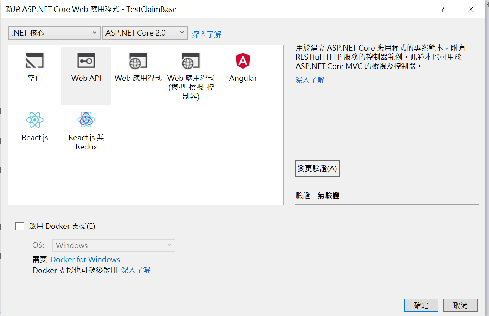

有了上一篇的概念後
我們來實作授權功能，
開啟一個 WebAPI 專案，使用 Asp.Net Core 2.0

建好專案後直接執行，預設會呼叫 api/values，
接著我們在 ValuesController 的 Get 方法上面加上授權屬性 Authorize
方法變成如下
1 | [] |
如此設定後，沒有登入的狀況下就不能呼叫此API了，
直接再次執行後得到 No authenticationScheme was specified, and there was no DefaultChallengeScheme found 的錯誤
此時 API 因為沒有權限的關係已經不能呼叫了，會出這個例外是因為我們沒有設定 AuthenticationScheme，先不管他。
由於我們是 API，沒有登入頁，所以要找個地方做登入，建立一個中間層 AuthentactionMiddleware，內容如下
1 | public class AuthentactionMiddleware { |
此中間層會給每個要求加上權限設定，記得要在 setup.cs 檔案內的 Configure 加入此中間層。
如此一來就可以呼叫 Vaules 的 Get 了。
再來，我們把 [Authorize] 改成 [Authorize(Policy = “BOSS”)]，並且在 Setup.cs 的 ConfigureServices 加上
1 | services.AddAuthorization(config => { |
執行程式，就又會出現權限錯誤，這是因為我們設定登入的使用者並沒有給他 BOSS 全縣，
此時只要把中間層給定聲明(Claim)的地方改成BOSS，
identity.AddClaim(new Claim("BOSS", ""));
API又可以再次呼叫了